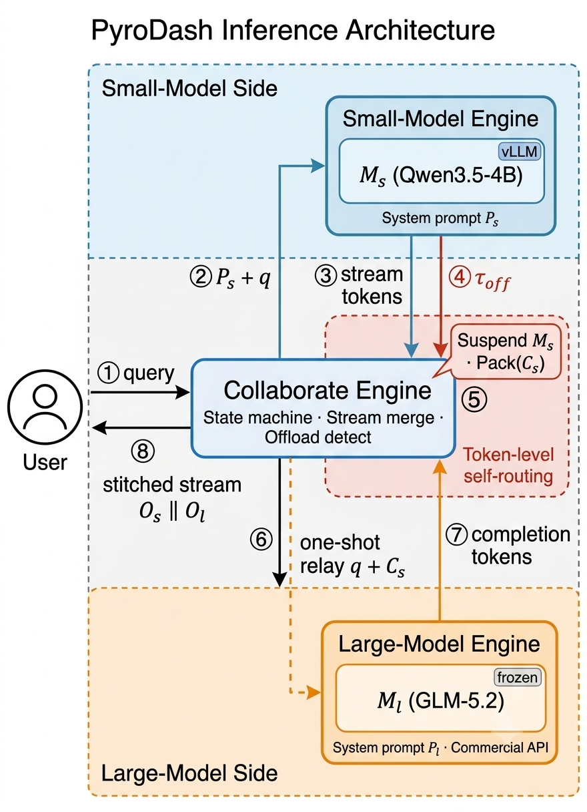

Control-token embedding
Extend the vocabulary and initialize <|llm_offload|> so the SLM can express offload intent.
PyroDash
Token-level offload with <|llm_offload|>. Near LLM quality, a fraction of the cloud bill.

How it works
No external router. No LLM retraining. The small model decides mid-reasoning when to hand off — then a frozen large model completes the chain in one shot.
Extend the vocabulary and initialize <|llm_offload|> so the SLM can express offload intent.
SFT teaches when and how to emit the control token on hard steps while keeping easy steps local.
Jointly optimize task accuracy and large-model call cost for an adaptive quality–cost frontier.
<|llm_offload|>
Results
On five math benchmarks (Minerva, GSM8K, Olympiad, AIME25, AIME24), PyroDash with Qwen3.5-4B + GLM-5.2 breaks the usual trade-off.
64.04%
Avg. accuracy (λ=0.05) — above GLM-5.2 alone
96.4%
Cost cut vs. pure cloud (λ=0.6)
1.90%
LLM token ratio at the low-cost operating point

| Method | Avg. | LLM Token % | Cost ($) |
|---|---|---|---|
| Qwen3.5-4B | 28.36 | 0.00 | 2.26 |
| Qwen3.5-4B (+SFT) | 46.25 | 0.00 | 1.32 |
| RouteLLM (~75% GLM) | 52.74 | 77.37 | 44.62 |
| GlimpRouter | 54.20 | 75.11 | 31.62 |
| PyroDash (λ=0.05) | 64.04 | 95.34 | 39.27 |
| PyroDash (λ=0.6) | 54.55 | 1.90 | 1.79 |
| GLM-5.2 | 57.68 | 100.00 | 49.37 |
Case study
Same problem: SLM-only vs. PyroDash relay. Watch the control token fire, then the large model finish the chain.
Resources
@misc{pyrodash2026,
title = {PyroDash: Cost-Efficient Token-Level Small-Large Model Collaborative Inference},
author = {{PyroMind Dynamics}},
year = {2026},
note = {Preprint}
}